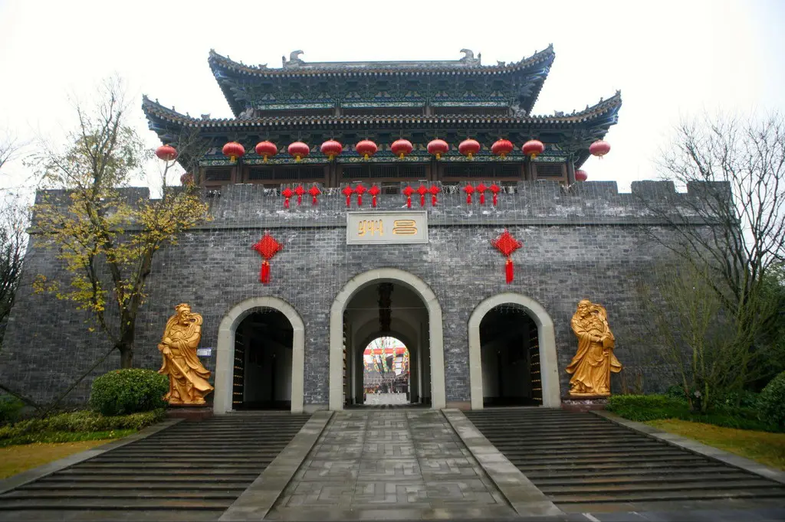
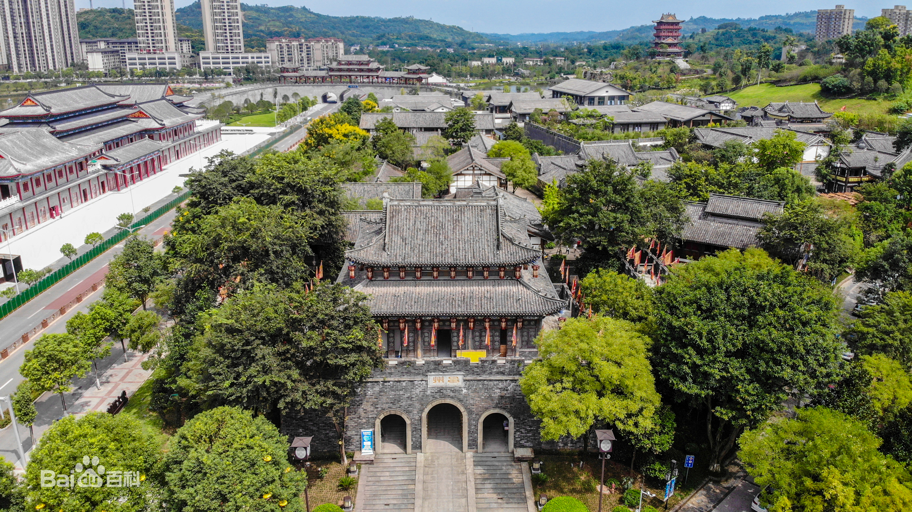

昌州古城，国家AAA级旅游景区，位于重庆市大足区东部新城核心区域，距重庆市主城区仅一小时车程，距成都市仅一个半小时车程，地处川渝核心经济带，毗邻大足最大市民公园——香国公园，是一座以“宋风宋韵”为主题打造的历史文化古城。
景区占地约300亩，集民俗文化、巴渝文化、石刻文化等于一体， [1] 规划了朱雀大街、雅集广场、长乐街、临泽街四大主题商业街区。昌州古城古城的空间形态延续宋代的传统特色，整条街区依山傍水，极富空间层次感。
昌州古城因大足历史上在宋朝为昌州府治地而命名，叶子奇着《草木子》又云：“海棠惟昌州者香，故号昌为海棠香国。州治前有香霏阁。“大足母亲河濑溪河蜿蜒曲折从景区缓缓流过，昌州古城与香霏街并立河岸。
昌州古城以“宋风宋韵”为设计理念，打造成以餐饮美食、地方小吃、非物质文化遗产展示、民俗文化、特色茶楼、民俗客栈为主的情景商业街区。
古城依河而建，内有昌州府衙、国学馆、戏台、绣楼及高约13米的昌州城楼等，展示了宋朝古昌州的历史底蕴和丰富的文化。 [3] 城内亭台楼阁鳞次栉比，飞檐翘角轻盈交错，雕梁画栋绚丽华美，衙、绣楼、戏台、财神庙、客栈、茶楼、酒肆......恰似一幅“清明上河图”的再现。
